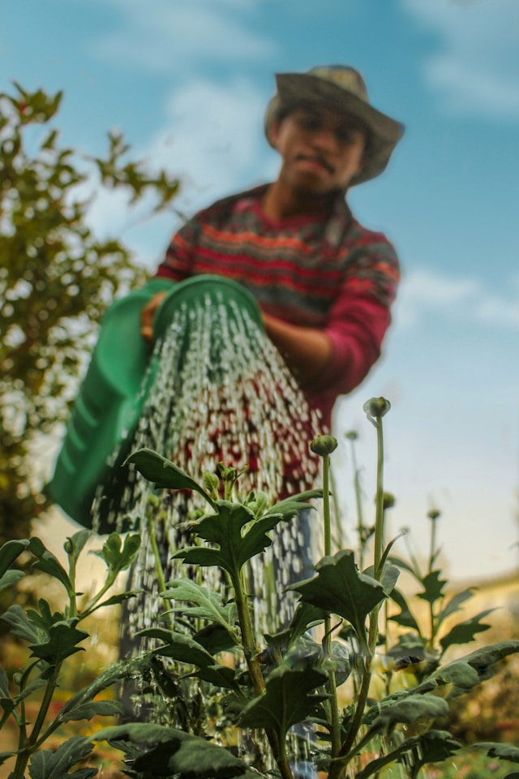

Jason: The Green Thumb Architect
Jason is the visionary force behind Lucky Shrub, leading the way in transforming landscapes into lush, vibrant havens. With a deep-rooted passion for plants cultivated over years of dedicated gardening, he serves as the garden architect of the firm. Drawing on his extensive knowledge of horticulture and design, Jason brings each client's dream garden to life with meticulous attention to detail.
As the creative mastermind, Jason not only conceptualizes stunning garden designs but also oversees their implementation with precision and expertise. His hands-on approach ensures that every project reflects the unique vision and personality of its owner, turning ordinary spaces into extraordinary retreats.
In addition to his role as a design leader, Jason is a nurturing team captain, guiding his crew of landscapers with patience and enthusiasm. Under his mentorship, they cultivate landscapes with care and craftsmanship, instilling life and vitality into every corner.
Beyond his work in the field, Jason is a dedicated advocate for sustainable gardening practices, promoting eco-friendly solutions that harmonize with nature's rhythms. His commitment to environmental stewardship echoes throughout Lucky Shrub's ethos, inspiring clients to cultivate not only beautiful gardens but also a deeper connection to the natural world.